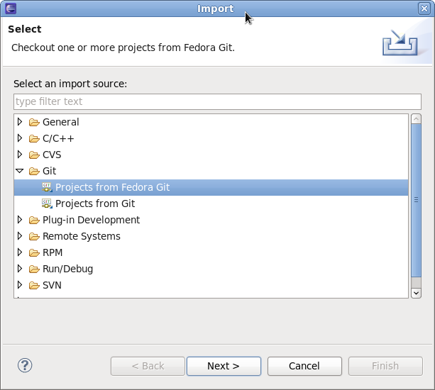
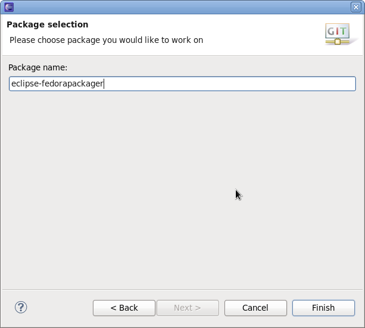
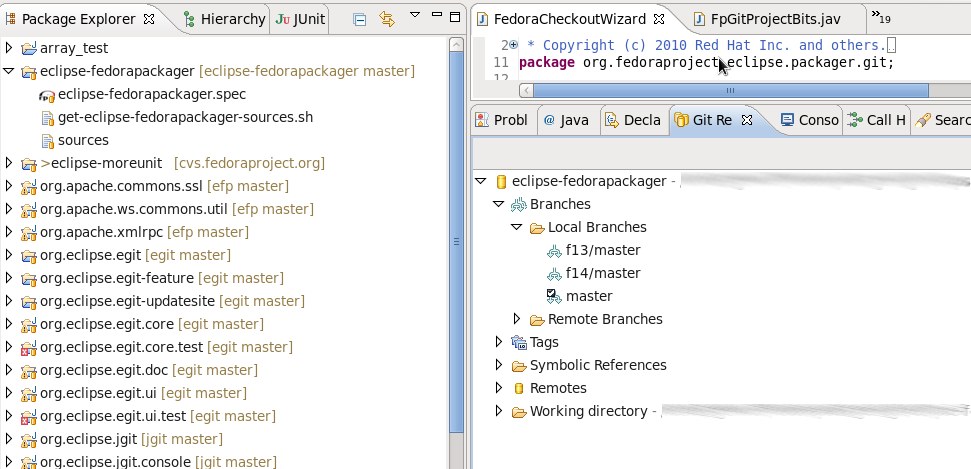
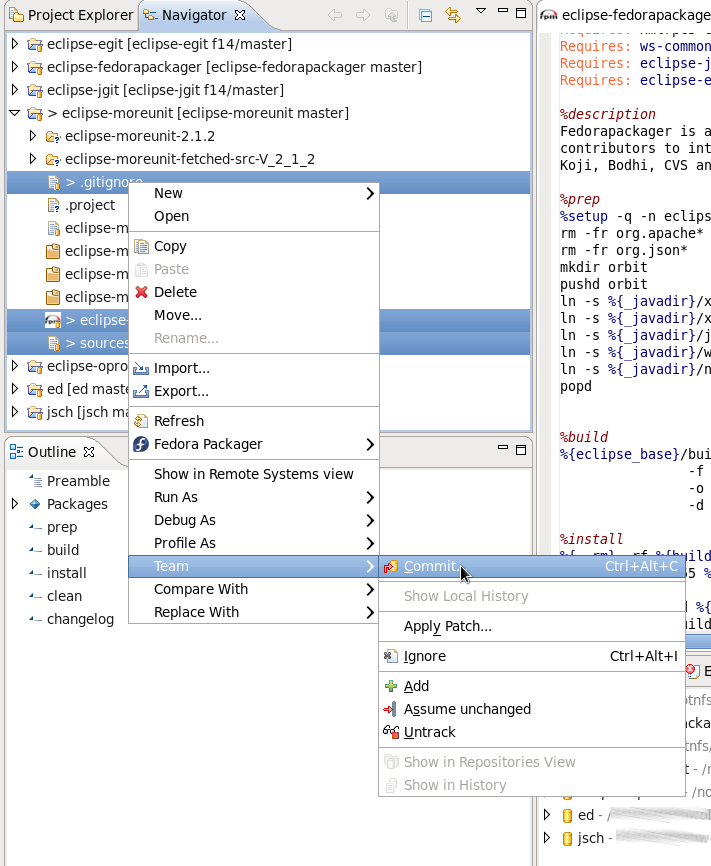
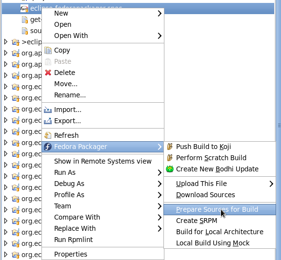
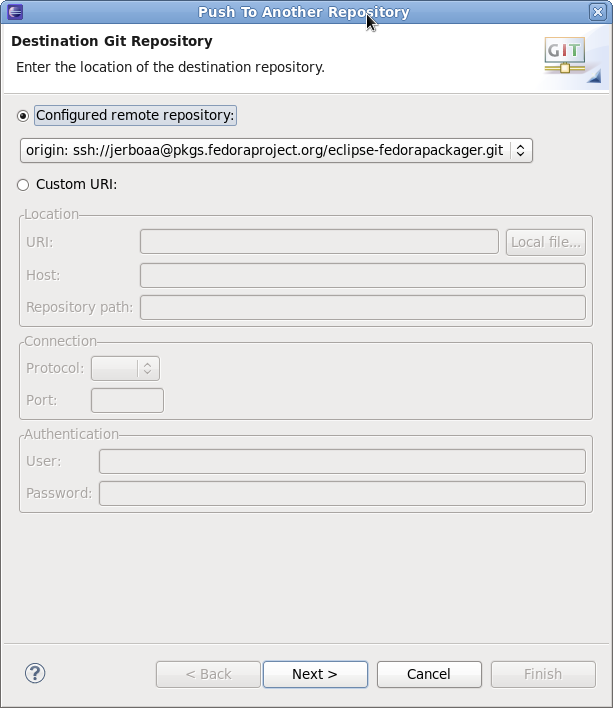
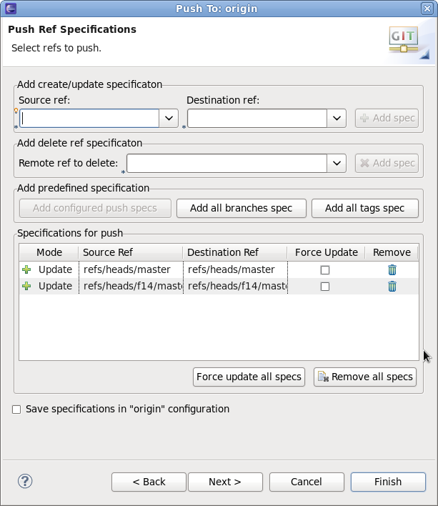
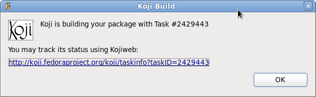

| Using Eclipse Fedorapackager | ||
|---|---|---|
|
|
|
|
| Fedora Packager User Guide | Feedback/Reporting Bugs | |
Since Fedora 14, the Git version control system for keeping track of files required for Fedora packaging is used. See the dist-git documentation for in depth information about dist-git. Fortunately, how dist-git works when using the Eclipse Fedora Packager plug-in is unimportant. There is only a slightly different approach for doing packaging work compared to what might have been used with CVS instead of Git.
This step is only required to be completed once for a new Fedora packager or if using a new machine that does not have required FAS certificates installed. When it is certain the set up is correct it is safe to skip this step. The following explains how to set up those certificates for a FAS account?
First, install the fedora-packager RPM package:
yum install fedora-packager
Then run the following command and simply follow the instructions provided:
$ fedora-packager-setup
Once this is done Eclipse Fedorapackager is ready for use. Fire up Eclipse. Let's get started. Yay!
Getting started is easy. Go to "File" => "Import" => "Git" => "Projects from Fedora Git". This will clone the desired Git repository and create necessary local branches. For convenience, the "Git Repositories" view will also open once the clone process has finished.

Here's how the Fedora Git import dialog looks like. Next, specify the package name that will then be prepared for you.

Once the new project has been created something akin to the following is seen. Note the branches in the Git Repository view and " master" right beside the project name. In this case, eclipse-fedorapackager refers to the Git repository name and master to the currently checked out branch.

After a Fedora Git project has been created, all files required for packaging the desired release can be found in the corresponding directory. For example, Fedora 13 corresponds to branch f13/master. Branch master corresponds to Fedora rawhide, the current development release of Fedora. WThe following is a brief description of things to consider doing while packaging up some software. Working in a different sequence works, but keep in mind that before trying a Koji build push your locally committed changes to the public repository.
In order to upload new sources in Eclipse Fedorapackager, first download upstream sources and place the downloaded sources in the same folder as the Eclipse project. If this is done outside of Eclipse, don't forget to refresh the project afterwards (F5) so that the file actually shows up. A slick way to download sources is to use RPM editor functionality directly. See its documentation for more information on this. Once the new source file is available in the project, it can be uploaded to the lookaside cache by right-clicking on the file=> Fedora Packager => Upload This File => Replace/Add File. This either adds the file to the sources required to build the package or replaces the current content of the sources file to contain a single line with the MD5 sum of the file selected.
A valid certificate is required to upload to the lookaside cache. If it has expired, a new one can be created by issuing the following command on a terminal:
$ fedora-cert -n
To download the required source files for an existing package in order to build it, right-click on the spec-file => Fedora Packager => Downloaded Sources. This downloads all sources listed in the file sources.
Eclipse Fedora Packager uses the RPM Editor and ChangeLog plug-in from the Eclipse Linux Tools project ( http://www.eclipse.org/linuxtools). For instance, a new ChangeLog entry can easily be created in the spec file by using the <CTRL>+<ALT>+C keyboard shortcut (though a good idea is to set appropriate “ChangeLog” preferences first). Using <CTRL>+<SPACE> auto-completes locally installed packages. Also, rpmlint can be run by right-clicking on the spec file => “Run Rpmlint”. For more information have a look at the spec file editor screencast: http://www.eclipse.org/downloads/download.php?file=/technology/linuxtools/videos/specfile-demo.ogg or at the "Specfile Editor User Guide": Help => Help Contents => Specfile Editor User Guide.
After the spec-file, patches etc. have been added/changed, commit those changes to the repository. This is done by:

Switching branches is as easy as double-clicking on the desired local branch to be worked on. The currently checked out branch is indicated to the left of the project name. Make sure to commit, revert, or stash changes before switching to a different branch. Refer to the Git/EGit documentation for more information on this.
Eclipse Fedora Packager will download and prepare sources by right-clicking on the spec-file => “Fedora Packager” => “Prepare Sources for Build”.

This is a great way to test if the spec-file actually builds at all. Once the RPM has been successfully built locally, it is recommended further testing be carried out on the spec-file by completing a build in a chroot'ed environment using {{{mock}}}. Both ways are supported by Eclipse Fedorapackager.
The RPM can be built locally by selecting the spec-file => right-click => “Fedora Packager” => “Build for Local Architecture”. Output of the RPM build will appear on the Eclipse console.
Using mock-builds is a great way to test the “Requires/BuildRequires” of a spec-file. Select the spec-file => right-click => “Fedora Packager” => “Local Build Using Mock”. Be aware that this may take a long time (>20 minutes) and requires the mock package to be installed. Use Eclipse's “Run in Background” functionality for convenience.
The changes are ready to be pushed (or published) publicly when the locally committed changes are satisfying. Remember, Git allows history to be rewritten before changes are made public. See the Git/EGit documentation for more information. To bring the local repository in sync with origin:
The Git push dialog.

Select the Git references to push. In this example, branches master and f14/master will get pushed. Keep in mind that source and destination references are the same for Eclipse Fedora Packager. Clicking the “Add all branches spec” button is a convenience that pushes all commits to all local branches.

Once satisfied with a spec file, upload the sources of the package, commit the changes to the local repository, and then push the local changes to the remote repository. When this is done, push a build to Koji by right-clicking the spec file => “Fedora Packager” => “Push to Koji”.

Eclipse will pop up a message with the Koji URL to track your build. This is an example of how the message may look:

This should be enough information to track the builds.
After successfully building the RPMs, use Eclipse Fedorapackager to push an update for those packages. To do so, select the spec file => right click => "Fedora Packager" => "Bodhi Update". Similar information is required when using the Bodhi Web interface. Once an update has successfully been created, the pushed update will be visible on the Bodhi updates website. The status up updates can also be tracked there.
|
|

|
|
| Fedora Packager User Guide | Feedback/Reporting Bugs |